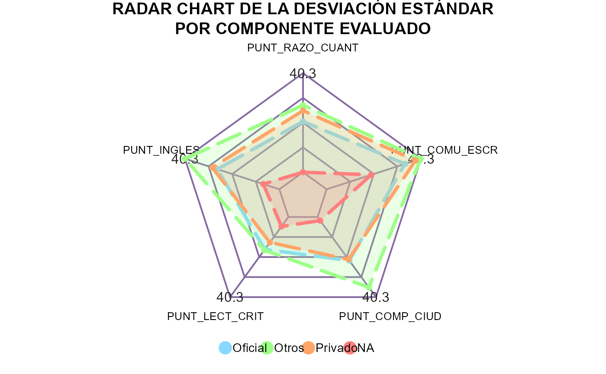

Plot.Radar.RdEsta función proporciona excelentes herramientas y opciones para la visualización
de un gráfico de radar (también conocido como gráfico de araña) dinámico con
el objetivo de observar datos multivariados de forma bidimensional. Dicho radar
chart o spider plot se puede representar usando dos diferentes librerías que
son Plotly y ECharts, las cuales usan internamente JavaScript.
Un data frame, se espera en formato de microdatos no un agregado.
Una variable categórica dentro del data frame ingresado en datos.
Lista (ya sea creada con la sintaxis base o tidy)
con las variables numéricas (mínimo tres para que se pueda realizar el gráfico)
dentro del data frame ingresado en datos.
Cadena de caracteres que indica el estadístico a graficar.
Los valores permitidos son "Promedio" (valor predeterminado), "Mediana",
"Varianza", "SD", "CV", "Min" y "Max".
Cadena de caracteres indicando los colores con los cuales se
deben colorear cada una de las trazas correspondiente a cada nivel del
argumento categoria. Si no se introduce algún vector se usará la paleta
rainbow por defecto.
Vector numérico de longitud dos que indica el valor mínimo y máximo,
respectivamente. Si no conoce el dominio del estadístico seleccionado omita
éste parámetro, pues internamente se usará c(0, NaN) como rango.
Si es TRUE indicará que las categorías de la variable ingresada
son ordinales (no nominales), esto con el fin de ordenar la disposición en
el que se presentan en el eje del gráfico, el valor por defecto es FALSE.
Cadena de caracteres indicando el título principal del plot.
Cadena de caracteres que indica el paquete con el cual se
realizará el radar. Los valores permitidos son "plotly" (valor predeterminado)
o "echarts". Los valores se emparejarán parcialmente.
Lista compuesta por varios parámetros, los cuales van a ser usados de acuerdo con la librería especificada para graficar el radar y cuyo objetivo es personalizar pequeños detalles de éste.
ply.LegendTitle, ply.LegendPosition y ply.Credits: Igual uso que en
Plot.Series()
ply.Relleno: Cadena de caracteres indicando cómo se debe rellenar el área,
toself (valor predeterminado) conecta los puntos de la traza de
forma cerrada y superpone las áreas, mientras que tonext deja visible la
capa más profunda y si se comparten áreas no las superpone; finalmente
especifique none si desea ver únicamente los polígonos y que no se rellene
el área dentro de ellos.
ply.Opacidad: Un número entre \([0, 1]\) que indica la opacidad de los
polígonos/trazos.
e.Credits: Cadena de caracteres indicando el subtítulo del gráfico principal.
Para mayor información, consulte la función e_title().
e.Forma: Cadena de caracteres indicando el tipo de renderizado del radar,
los valores admitidos son polygon (valor predeterminado) y circle.
Para mayor información, consulte la función e_radar_opts().
e.Tema: Modifica el tema con el cual se creará el gráfico. Los posibles
valores son un número entero entre \([1, 14]\) el cual hace referencia
a diferentes temas disponibles en dicha librería (helianthus, azul,
inspired, macarons, westeros, walden, roma, royal, fruit,
dark, chalk, purple-passion, vintage y essos respectivamente).
El tema por defecto se logra al no ingresar valor alguno. Para más información
consulte aquí.
e.LegType: Cadena de caracteres indicando el tipo de leyenda, los valores
admitidos son plain (valor predeterminado) y scroll
(útil cuando es necesario mostrar demasiados elementos). Para mayor
información consulte la función e_legend().
e.LegLoc: Valor numérico o cadena de caracteres indicando la distancia
entre la leyenda y el lado derecho del contenedor, puede ser expresado como
un valor puntual o un valor porcentual relativo al ancho del contenedor.
gg.Range: Valor booleano opcional, si se especifica en TRUE el rango
a tomar será simétrico, en el sentido en que se tomará el mínimo y máximo
global de todas las variables, uno mismo para cada una de ellas. Diferente
a si se omite el parámetro rango, pues acá el mínimo y máximo varía para
cada variable.
gg.plty: Tipo de línea para los datos del gráfico. Para más detalles
consulte la función radarchart().
gg.plwd: Ancho de la línea para los datos del gráfico. Para más detalles
consulte la función radarchart().
gg.cglwd: Ancho de la línea para las grillas del radar. Para más detalles
consulte la función radarchart().
gg.cglcol: Color de la línea para las grillas del radar. Para más detalles
consulte la función radarchart().
Si es FALSE (valor predeterminado) el gráfico a retornar
será dinámico (dependiendo de la librería seleccionada), en caso contrario
se retornará un gráfico estático construido con ggplot2.
Retorna el radar (objeto widget de HTML) creado. La clase del objeto retornado será un "htmlwidget" y dependiendo de la librería usada pertenecerá adicionalmente a la clase "plotly" o "echarts4r".
Sabemos que puede ser abrumador el número de argumentos dentro del parámetro
estilo, pero es necesario si queremos ofrecer al usuario la máxima
personalización dentro de cada función usando cualquier librería. Por tal
razón, a continuación, se detalla el listado completo de argumentos, usados
al especificar la librería y en qué función están presentes
(marcado con una × si lo posee).
| Librería | estilo$ | Plot.Series() | Plot.Barras() | Plot.Apiladas() | Plot.Boxplot() | Plot.Radar() | Plot.Treemap() | Plot.Torta() | Plot.Drilldown() |
| ┌ | gg.Tema | × | × | × | × | ||||
| │ | gg.Texto | × | × | × | × | ||||
| │ | gg.Legend | × | × | × | |||||
| │ | gg.Linea | × | |||||||
| │ | gg.Punto | × | |||||||
| │ | gg.Bar | × | × | ||||||
| │ | gg.VarWidth | × | |||||||
| │ | gg.OutShape | × | |||||||
| │ | gg.JitWidth | × | |||||||
| │ | gg.JitSize | × | |||||||
| │ | gg.Range | × | |||||||
| ggplot2 | gg.plty | × | |||||||
| │ | gg.plwd | × | |||||||
| │ | gg.cglwd | × | |||||||
| │ | gg.cglcol | × | |||||||
| │ | gg.fontsize.title | × | |||||||
| │ | gg.fontsize.labels | × | |||||||
| │ | gg.fontcolor.labels | × | |||||||
| │ | gg.border.lwds | × | |||||||
| │ | gg.border.col | × | |||||||
| │ | gg.lowerbound.cex.labels | × | |||||||
| │ | gg.force.print.labels | × | |||||||
| └ | gg.overlap.labels | × | |||||||
| ╔ | hc.Tema | × | × | × | × | × | × | × | |
| ║ | hc.Credits | × | × | × | × | × | × | × | |
| highcharter | hc.BoxInfo | × | |||||||
| ║ | hc.Slider | × | |||||||
| ╚ | hc.borderRadius | × | |||||||
| ┌ | ply.Credits | × | × | × | × | × | × | × | |
| │ | ply.Legend | × | × | ||||||
| │ | ply.LegendPosition | × | × | × | × | ||||
| plotly | ply.Interaction | × | × | ||||||
| │ | ply.Relleno | × | |||||||
| │ | ply.Opacidad | × | × | ||||||
| └ | ply.LegendTitle | × | |||||||
| dygraphs | dyg.LegendWidth | × | |||||||
| ╚ | dyg.Resaltar | × | |||||||
| ┌ | e.Tema | × | |||||||
| │ | e.Credits | × | |||||||
| echarts4r | e.Forma | × | |||||||
| │ | e.LegType | × | |||||||
| └ | e.LegLoc | × |
# library(dplyr)
Plot.Radar(
datos = ejSaberPro2020,
categoria = TIPO_COL,
variables = vars(PUNT_LECT_CRIT, PUNT_RAZO_CUANT, PUNT_INGLES),
colores = c("#2ACE82", "#FE2667", "#32E7C8", "#FF8D00"),
rango = c(0, NaN),
estilo = list(ply.Relleno = "tonext")
)
#> Warning: ¡Se usará como estadístico la media muestral ('mean') por defecto!
#> Warning: ¡Se usará la librería 'plotly' por defecto para realizar el plot!
#> Joining with `by = join_by(TIPO_COL)`
# ---------------------------------------------------------------------------
Plot.Radar(
datos = ejSaberPro2020,
categoria = SEDE_NOMBRE_ADM,
variables = vars(
PUNTAJE_GLOBAL, PUNT_RAZO_CUANT, PUNT_INGLES,
PUNT_LECT_CRIT, PUNT_COMP_CIUD, PUNT_COMU_ESCR
),
rango = c(0, NaN)
)
#> Warning: ¡Se usará como estadístico la media muestral ('mean') por defecto!
#> Warning: ¡Se usará la librería 'plotly' por defecto para realizar el plot!
#> Joining with `by = join_by(SEDE_NOMBRE_ADM)`
# ---------------------------------------------------------------------------
Plot.Radar(
datos = ejSaberPro2020,
categoria = SEDE_NOMBRE_ADM,
variables = vars(
PUNTAJE_GLOBAL, PUNT_RAZO_CUANT, PUNT_INGLES,
PUNT_LECT_CRIT, PUNT_COMP_CIUD, PUNT_COMU_ESCR
),
rango = c(0, NaN),
libreria = "echarts"
)
#> Warning: ¡Se usará como estadístico la media muestral ('mean') por defecto!
#> Joining with `by = join_by(SEDE_NOMBRE_ADM)`
# ---------------------------------------------------------------------------
misColores <- c(
"#29ABE2", # AZUL CLARO | Amazonia
"#8CC63F", # VERDE | Bogota
"#CC241D", # ROJO | Caribe
"#0071BC", # AZUL VIVO | Manizales
"#F15A24", # NARANJA | Medellin
"#FBB03B", # AMARILLO | Orinoquia
"#93278F", # MORADO | Palmira
"#8A381A" # GRIS | Tumaco
)
Msj <- "Gr\u00e1fico de radar para representar los puntajes multivariados de la prueba Saber Pro."
Plot.Radar(
datos = ejSaberPro2020,
categoria = SEDE_NOMBRE_ADM,
variables = vars(
PUNTAJE_GLOBAL, PUNT_RAZO_CUANT, PUNT_INGLES,
PUNT_LECT_CRIT, PUNT_COMP_CIUD, PUNT_COMU_ESCR
),
estadistico = "SD",
colores = misColores,
rango = c(0, NaN),
titulo = "SPIDER PLOT",
libreria = "plotly",
estilo = list(
ply.LegendTitle = "SEDE:", ply.LegendPosition = list(x = 0, y = -0.15, orientation = "h"),
ply.Relleno = "tonext", ply.Opacidad = 0.8, ply.Credits = list(x = 0.8, y = -0.1, text = Msj)
)
)
#> Joining with `by = join_by(SEDE_NOMBRE_ADM)`
# ---------------------------------------------------------------------------
Plot.Radar(
datos = ejSaberPro2020,
categoria = SEDE_NOMBRE_ADM,
variables = vars(
PUNTAJE_GLOBAL, PUNT_RAZO_CUANT, PUNT_INGLES,
PUNT_LECT_CRIT, PUNT_COMP_CIUD, PUNT_COMU_ESCR
),
estadistico = "CV",
colores = misColores,
rango = c(0, 0.25),
titulo = "RADAR CHART",
libreria = "echarts",
estilo = list(
e.Credits = Msj, e.Forma = "circle", e.Tema = 10,
e.LegType = "scroll", e.LegLoc = 0
)
)
#> Joining with `by = join_by(SEDE_NOMBRE_ADM)`
# ---------------------------------------------------------------------------
# Ejemplo usando el caso estático (fmsb)
Plot.Radar(
datos = ejSaberPro2020,
categoria = TIPO_COL,
variables = vars(
PUNT_RAZO_CUANT, PUNT_INGLES, PUNT_LECT_CRIT, PUNT_COMP_CIUD, PUNT_COMU_ESCR
),
estadistico = "SD",
colores = c("#89D8FF", "#9CFF86", "#FFA568", "#FF7F7F"),
titulo = "RADAR CHART DE LA DESVIACI\u00d3N EST\u00c1NDAR\nPOR COMPONENTE EVALUADO",
# rango = c(10, 40),
estatico = TRUE,
estilo = list(
gg.Range = TRUE, gg.plty = 5, gg.plwd = 4, gg.cglwd = 2, gg.cglcol = "#856AA1"
)
)
#> Joining with `by = join_by(TIPO_COL)`
